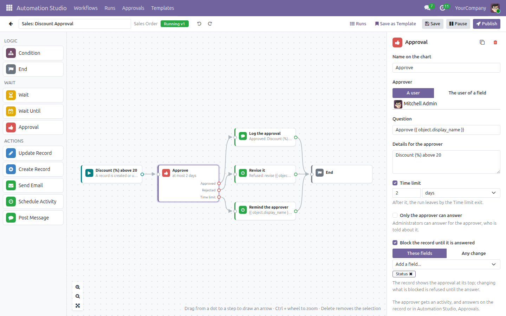
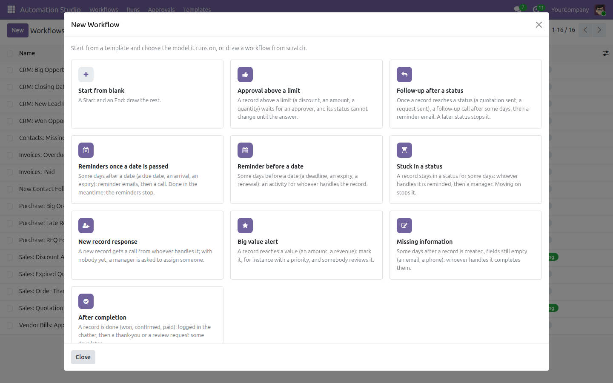
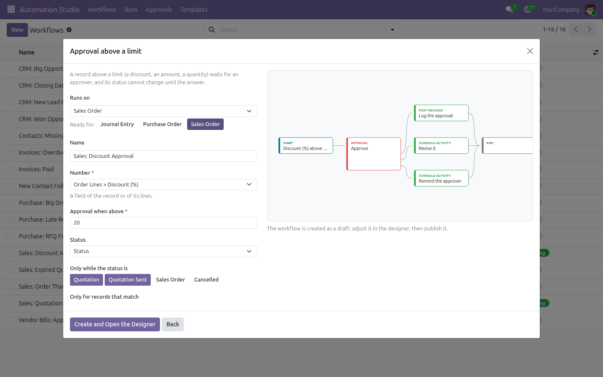
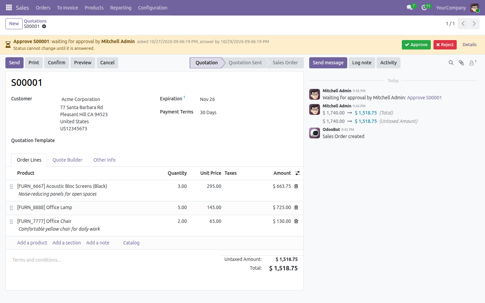
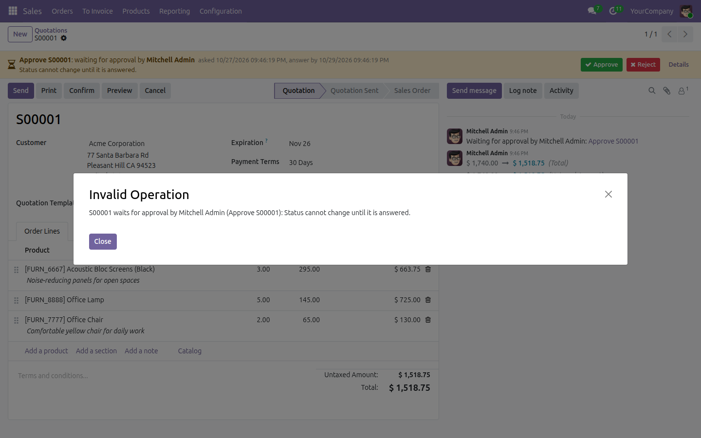
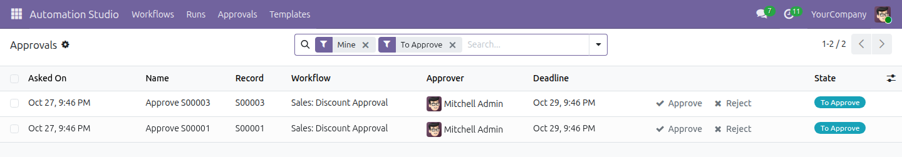
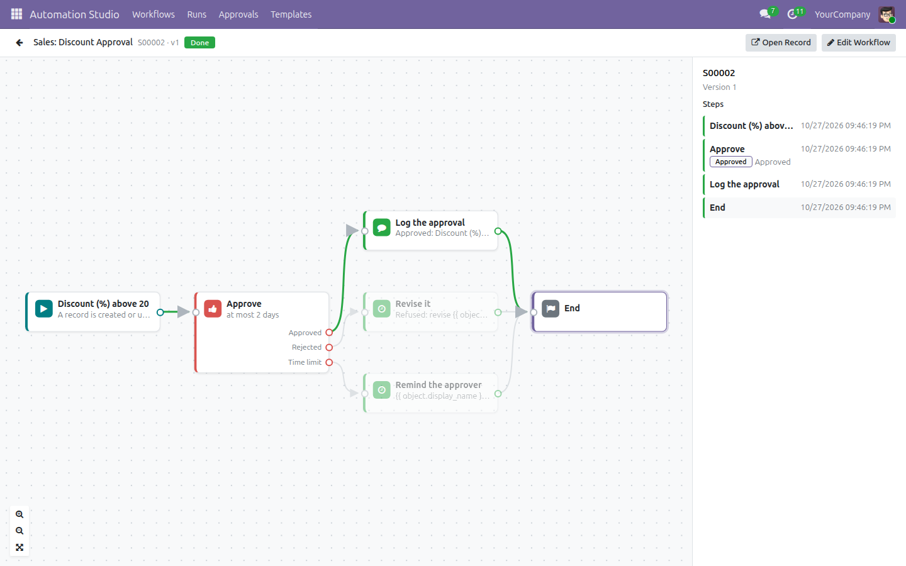
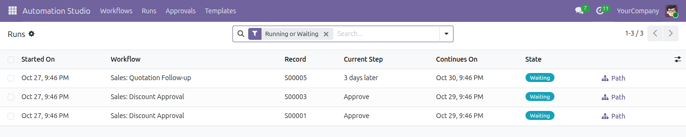

Draw how your records move as a flowchart, and let Odoo run it: conditions, waits, approvals, emails, activities and record updates, on any app, without code. Start from one of nine ready templates, then follow every record on the chart, step by step.
No paid edition, no limits: the code is open (LGPL-3). Every feature is covered by automated tests. Tell us what works, what does not and what you miss.
Drag the steps onto the chart, link them, set each one in the side panel. A workflow runs on the records of one model: quotations, purchases, invoices, leads, contacts, tasks, or any model with a chatter.
The steps on the left, the chart in the middle, the settings of the selected step on the right. Undo and redo, copy a step, zoom, and publish when the chart is ready.

A discount above 20% waits for the sales manager, with a reminder after two days.
New opens the templates: approval above a limit, follow-up after a status, reminders once a date is passed, reminder before a date, stuck in a status, new record response, big value alert, missing information, after completion. Pick one and the model it runs on: the fields are guessed, and quotations, purchases, invoices, vendor bills, leads and contacts come ready. The chart is drawn as you set it.


Approval above a limit, ready for Sales Orders: the discount of the lines, 20%, while a quotation.
A record waiting for an approval shows it at its top, with Approve and Reject for the approver, and the chatter notes the question and the answer. While it waits, its status cannot change: the quotation cannot be confirmed or sent. Choose the fields to block, or any change. Administrators can answer for an approver who is away, and the approver is told; a step can keep the answer to the approver alone.


Confirm is refused until the discount is approved. Lower the discount and the approval is withdrawn.

Every approver also finds their questions in Approvals, and as an activity.
Every record going through a workflow is a run: the step it is on, when it goes on, and each step it went through. Show it on the chart, open its record, cancel it, or retry the step that failed. A step that fails is rolled back alone: it never undoes the change that started the run.

The way S00002 went: approved, logged, done.

Save as Template keeps a workflow for your company, or for all of them, and it appears among the templates of New. Export a template as a file and import it into another database: users, activity types, email templates and the records the steps set are found again by their external id or their name, and what is missing is listed for you to choose again.
How is it different from Automation Rules?
A rule does one thing when something happens. A workflow goes on over days: it waits, asks, branches on the answer and remembers where each record is, and you see it all on one chart.
What if I change a workflow while records are in it?
Nothing breaks: they go on with the version they started on, and the new records follow the new version.
What if a step fails, for instance a missing email template?
Only that step is rolled back and the run stops as Failed, with the error. Fix the cause and retry it from the run.
Can the approver be someone who cannot see the record?
They can answer from Approvals, and the record warns about it. Better: choose an approver who sees the records, such as a sales manager.
Is it really free?
Yes, all of it, under LGPL-3. There is no paid edition. Reviews, bug reports and ideas are welcome.